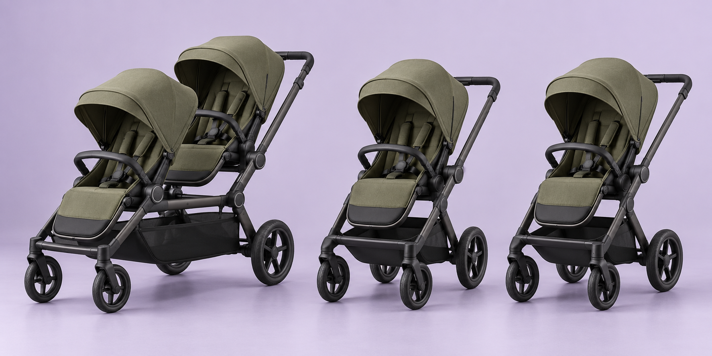

LITTLE JOURNEYS. BIG QUESTIONS.
Family life
doesn’t stand still.
Neither should
our ideas.
Every family moves differently. We’re exploring a new stroller idea — and your everyday experience is where we want to start.
8 quick questions · About 3 minutes · No sales pitch
Good ideas start
with real families.
Your everyday
Tell us about your family and how you get around.
A little possibility
See the concept after your first four answers.
Your honest take
Tell us what works, what doesn’t, and what matters.
This is independent concept research. There’s no product to buy, no preorder, and no promise of a launch. Honest “no” answers are just as useful as “yes.”
02 / MEET THE POSSIBILITY
Together when you want.
Apart when you need.
What if one tandem stroller could separate into two independently usable single strollers?

These AI-generated images are for research purposes only. They do not show an existing product or working prototype. Connection mechanics, safety, weight, folding, and performance have not been developed or tested. Any future design could look and work differently.
One caregiver, both children. Or two caregivers, separate plans.
That’s the idea. Now tell us whether it fits your life.
ONE LAST THING / OPTIONAL
Keep a little
possibility in your inbox.
Leave your email if you’d like occasional updates on this idea and invitations to future research. Your survey counts either way.
THANK YOU FOR YOUR HONEST TAKE
Small answers.
Meaningful direction.
This research concept is not available to purchase.